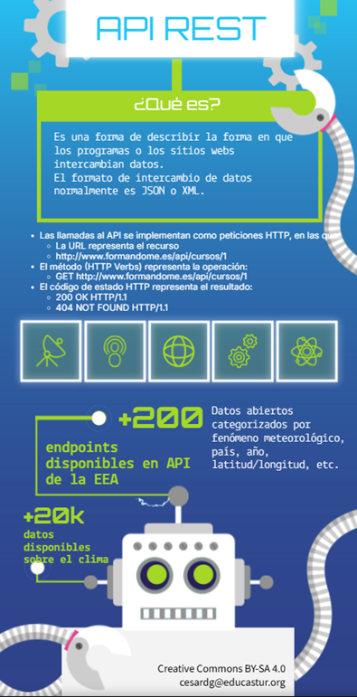

¿Cómo y cuándo se evaluarán los productos generados?
La evaluación será continua, formativa y sumativa, basada en la observación del proceso, los productos entregados y la presentación final. El alumnado trabajará en equipo, pero también se evaluarán contribuciones individuales.
Instrumentos de evaluación visibles para el alumnado
Estos instrumentos estarán enlazados desde Teams, el aula virtual o el REA de eXeLearning, accesibles desde la primera sesión.
Lista de Cotejo: Exploración de APIs (Tarea 1)
Verifica si:
- Se ha encontrado una API válida y relacionada.
- Se han documentado rutas, parámetros y formato de respuesta.
- Se entrega infografía clara y visual.
Rúbrica de diseño técnico (Tarea 2)
Rúbrica de implementación del código (Tareas 3 y 4)
Evalúa:
- Modularización del código
- Parseo y filtrado correcto de datos
- Validaciones incluidas
- Visualización funcional y clara
Rúbrica de presentación y documentación (Tarea 5)
